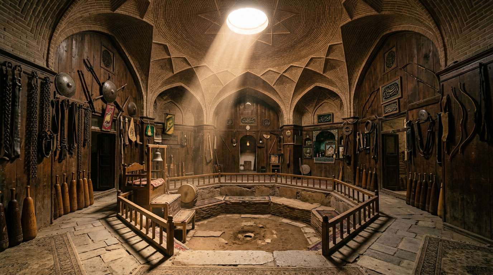
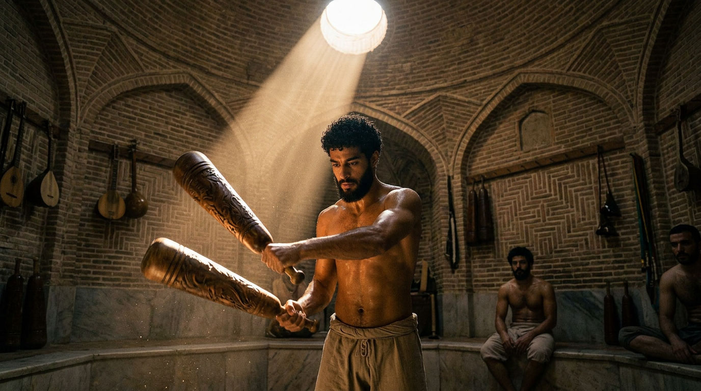
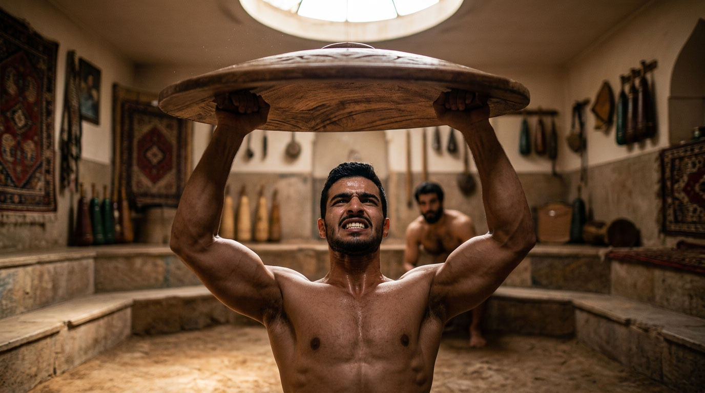
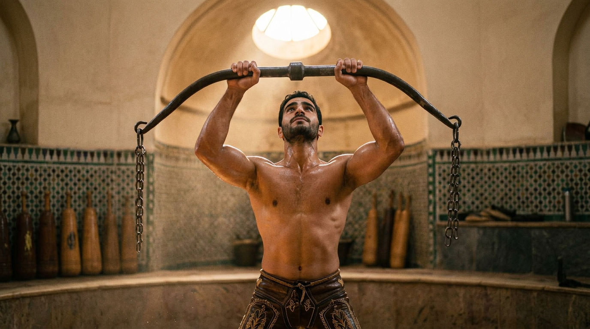
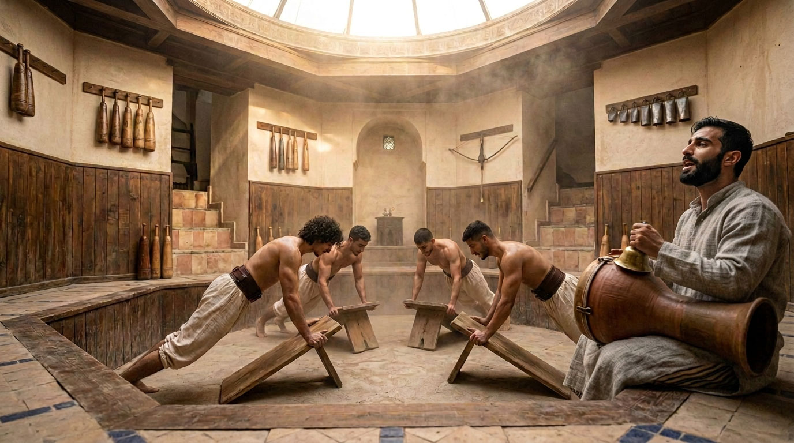
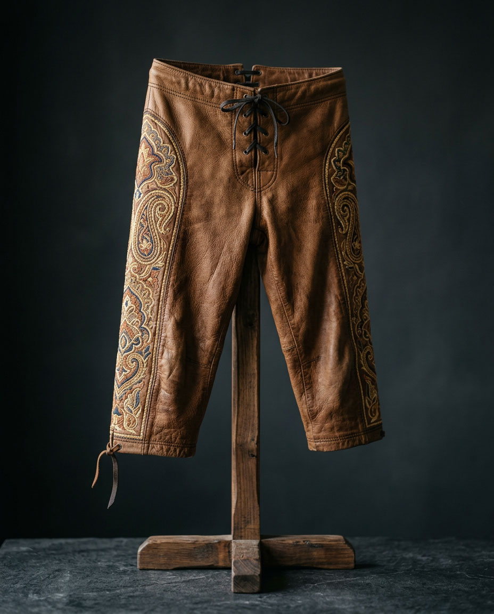

Javanmardi
The Persian chivalric ideal, and its house of strength.

A SISTER IDEAL
Javanmardi and futuwwa
Javanmardi (جوانمردی, literally “the quality of the young man”) is the exact Persian counterpart of Arab futuwwa — same structure, same demand: generosity, loyalty, self-mastery, service. The two traditions nourished each other for centuries, especially in urban brotherhoods and craft guilds. Dar al-Hiraf does not confuse them, but holds them side by side — like two languages saying, with a different accent, the same thing.
THE HOUSE OF STRENGTH
The zurkhane
The zurkhane (“house of strength”) is the traditional gymnasium where javanmardi is practised in the body. A slightly sunken octagonal pit (the gowd), a dome pierced by a single zenithal opening, a master seated to the side — the morshed — who sets the rhythm of exercise with drum and heroic chant. Recognised by UNESCO as intangible cultural heritage of humanity, the zurkhane is still practised today in Iran and neighbouring countries.
The instruments

MIL
Mil
Heavy wooden clubs, swung in circles to develop the shoulders and coordination.

SANG
Sang
A heavy wooden or metal shield, lifted at arm’s length in a movement close to the bench press.

KABBADE
Kabbade
An iron bow fitted with chains, originally a tool to strengthen the archer’s shoulder, lifted above the head.

TAKHTE
Takhte-ye shena
An inclined board for push-ups, symbolising the sword.
The attire

For ordinary exercise the practitioner wears the loang — a simple panel of cloth wrapped at the waist. For wrestling proper to the zurkhane, a short worked-leather pant, sometimes embroidered, tight at the waist and below the knee: the tonban. Its form and function are not unlike the kispet of Ottoman wrestling, already present at Dar al-Hiraf — two distinct traditions that arrived, each in its own way, at the same answer: when loose cloth becomes an obstacle to the hold, only fitted leather remains.
BODY AND CHARACTER
Why at Dar al-Hiraf
The principle is the same as for Musara and furusiyya: strength has value only when placed in the service of a greater mastery — of the self. The pahlavan, the hero of the zurkhane, is not honoured for power alone but for generosity and uprightness, exactly like the fata of futuwwa. At Dar al-Hiraf the zurkhane stands alongside Musara, archery and equitation — one more discipline in the same family of demand.
The terms on this page are gathered in the glossary of the house.